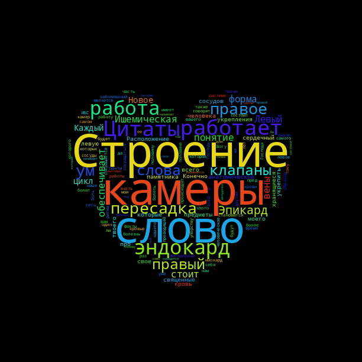

Analyse textuelle avec l'aide du concordancier PALS
Japonais
Environnement grammatical et champs sémantiques dominants
L'analyse des cooccurrences montre que les particules grammaticales apparaissent avec une spécificité particulièrement élevée autour de 心. Les particules の、を、は présentent respectivement des spécificités de 15, 13 et 10, indiquant leur surreprésentation dans le corpus. Cette forte présence témoigne de la centralité syntaxique du terme, qui occupe diverses positions dans la phrase et se combine avec différentes fonctions grammaticales. Le champ sémantique du corps émerge de manière significative dans les cooccurrences. Les termes 体 (karada, "corps", spécificité 9.69), 折れ (ore, "se briser", spécificité 8.51) et 安定 (antei, "stabilité", spécificité 6.62) révèlent que 心 est fréquemment associé à des notions corporelles, à la stabilité psychologique ou à des expressions de fragilité et de rupture. Cette connexion illustre l'approche holistique japonaise de la psyché humaine, où l'esprit et le corps sont perçus comme indissociables. Les termes 優しく (affectueux), 好奇 (curiosité, spécificité 4.73), 理解 (compréhension, spécificité 4.36), 自覚 (conscience de soi) et 知見 (connaissance) montrent que 心 se lie étroitement à la perception, la compréhension et la sensibilité. Le terme 読める (yomeru, "pouvoir lire/comprendre", spécificité 6.33) suggère notamment la capacité à déchiffrer les états intérieurs, tant les siens que ceux d'autrui. La présence de marqueurs comme 僕 (je, masculin), 自分 (soi-même), いる (être/exister) indique que l'usage de 心 apparaît préférentiellement dans des textes narratifs ou introspectifs, typiques des blogs personnels. La fréquence des guillemets 「 」 suggère par ailleurs de nombreuses citations ou dialogues impliquant ce concept, renforçant cette dimension caractéristique des témoignages et récits d'expérience personnelle.
Thématiques transversales
L'analyse révèle que 心 se combine rarement de manière isolée, mais s'insère plutôt dans des structures avec des verbes ou adjectifs à connotation psychologique ou corporelle. Parmi les collocations récurrentes, on trouve 折れる心 (cœur qui se brise), 安定した心 (esprit stable) et 心を理解する (comprendre le cœur/l'esprit). Ces expressions illustrent la capacité à exprimer des états psychologiques complexes. Le corpus présente une concentration massive de terminologie spécialisée : 心理 (shinri, "psychologie"), 精神 (seishin, "esprit"), 不安 (fuan, "anxiété"), 緊張 (kinchō, "tension"), バランス (baransu, "équilibre") et 安心 (anshin, "tranquillité d'esprit"). Cette prédominance révèle un ancrage dans le discours clinique et thérapeutique, caractéristique des articles médicaux et des pages d'accueil de cliniques qui cherchent à informer et rassurer leurs patients potentiels. On retrouve également, d'un côté, des termes qui évoquent la vulnérabilité : 折れる (se briser), 弱い (faible, spécificité 3.98), 傷 (kizu, "blessure"). De l'autre, des expressions renvoient à la protection et au renforcement : 保つ (tamotsu, "maintenir"), 整える (totonoer, "ajuster"), 耐性 (taisei, "résistance"). Cette tension thématique suggère un discours centré sur le développement personnel et la gestion des difficultés psychologiques, particulièrement présent dans les blogs personnels qui relatent des parcours de guérison ou de transformation personnelle.
Cadre conceptuel
L'analyse révèle des références explicites à divers cadres conceptuels. On trouve notamment ユング (Yungu, "Jung") pour la psychanalyse, 仏教 (bukkyō, "bouddhisme") pour les traditions spirituelles orientales, 無意識 (muishiki, "inconscient") pour les concepts psychodynamiques et 防衛 (bōei, "défense") pour les mécanismes psychologiques. Cette diversité témoigne d'une approche éclectique qui combine psychologie occidentale et traditions spirituelles orientales. Cette hybridation est particulièrement caractéristique du discours psychologique japonais contemporain. La présence marquée de références au bouddhisme s'explique directement par l'inclusion de blogs consacrés à cette tradition spirituelle dans le corpus. Dans ces textes, 心 occupe une place centrale en tant que concept à la fois philosophique et pratique. Le corpus mentionne également diverses approches pratiques et interventions concrètes. On y trouve 療法 (ryōhō, "thérapie"), 訓練 (kunren, "entraînement"), 腹式呼吸 (fukushiki kokyū, "respiration abdominale") et 対話 (taiwa, "dialogue"). Ces termes révèlent un discours orienté vers l'action et l'intervention concrète. Cela est typique des pages d'accueil de cliniques qui présentent leurs services thérapeutiques. Elle caractérise aussi les blogs personnels et bouddhistes qui proposent des exercices de développement spirituel et émotionnel accessibles aux lecteurs.
Wordcloud

Russe
Les formes grammaticales
Si l’on considère les formes grammaticales, la forme la plus fréquente est « сердца » — 1057 occurrences (ce qui correspond à 54 % de toutes les formes du mot сердце rencontrées dans le corpus). Cette forme peut correspondre aussi bien au génitif du singulier qu’au nominatif du pluriel. À l’oral, ces deux formes se distinguent par l’accentuation, qui n’est pas indiquée à l’écrit. L’emploi fréquent du génitif s’explique par le fait qu’elle est utilisée pour désigner les traits et les caractéristiques d'un objet, en l’occurrence du cœur.
La deuxième forme la plus fréquente est « сердце », qui correspond au nominatif et au locatif du singulier et représente 37 % de toutes les formes du mot « сердце » dans le corpus. Les formes « сердцу » et « сердцем » ne représentent pas plus de 9 %. Il convient de noter que, lors de la recherche de pages web dans le moteur de recherche, les huit formes du mot сердце ont été utilisées.
Les champs sémantiques
Les pages web en langue russe sélectionnées pour ce projet peuvent être divisées en trois groupes selon leur thématique : l’anatomie et les maladies, la sphère spirituelle et le thème du voyage. Ces trois thématiques sont représentées de manière inégale dans le corpus : 26 pages pour la première, 19 pour la deuxième et 5 pour la troisième.
Ci-dessous sont listés les mots cooccurrents présentant la spécificité la plus élevée, répartis selon les deux thématiques prédominantes dans le corpus.
Champ sémantique spirituel : слово (mot), ум (esprit), человек (homme), понятие (concept), священный (sacré). Ce champ est constitué de mots relevant de la sphère cognitive et spirituelle.
Champ sémantique anatomique : работа (fonctionnement), работает (fonctionne), пересадка (transplantation), строение (structure), камеры (cavités), эндокард (endocarde), ишемическая болезнь (cardiopathie ischémique), форма (forme), правый (droit), левый (gauche), вены (veines), анатомическое (anatomique), кровь (sang). Ce champ regroupe principalement des mots décrivant le fonctionnement de l’organe cœur, ses parties (gauche et droite, cavité), sa localisation dans le corps, les organes qui lui sont liés, ainsi que les maladies et les opérations qui y sont associées.
Wordcloud
Portugais
Les formes grammaticales
Le mot « cœur » présente une flexion nominale relativement simple en portugais, « coração » au singulier et « corações » au pluriel. L'analyse quantitative du corpus révèle que la forme singulière est largement prédominante, représentant la grande majorité des occurrences. Bien qu'elles ne soient pas très présentes dans le corpus, il existe également des dérivations lexicales, qui peuvent apparaître sous la forme augmentative « coraçãozão » et diminutive « coraçãozinho », généralement utilisées à l’oral pour exprimer de l'affection.
Grammaticalement, « cœur » fonctionne comme le noyau des syntagmes nominaux, mais les cooccurrences montrent que les mots qui l'accompagnent changent radicalement selon le sens. Les données indiquent une fréquence élevée de « o » (10.51) et « um » (7.34). Au sens figuré, l'article indéfini « um » a une spécificité positive (2.26), indiquant que, lorsqu'on parle de sentiments, on traite le cœur comme une qualité subjective et individualisée (« ele tem um coração bom »). Quant à l'article défini « o », avec une fréquence de 10.51, il apparaît majoritairement dans des contextes anatomiques et géographiques (le cœur en tant qu'entité unique ou organe spécifique). Pour le sens de centre, la préposition « do » (de + o) est très remarquable (5.90) soulignant, essentiellement, une fonction syntaxique de complément de nom ou de lieu.
Les champs sémantiques
Les pages web sélectionnées pour ce projet sont divisées en trois groupes selon leur thématique : l’anatomie et le contexte médical, la métaphore du centre de quelque chose et le sens émotionnel et de l’âme.
Dans la première partie, le langage est technique et précis, centré sur des maladies et des procédures médicales, comme la transplantation cardiaque,« transplante » (4.31) et « saúde » (3.07), les structures de l'organe « órgão » (4.10) , ainsi que sur le contexte éducatif « função » (2.87).
Dans la deuxième partie, le mot est utilisé comme le centre ou la partie la plus importante de quelque chose. Ce domaine est marqué par la géographie et un discours descriptif. La spécificité extraordinaire de « São Paulo » (8.66) révèle la place centrale occupée par cette métropole dans l'imaginaire géographique brésilien, où elle apparaît comme le « cœur » urbain du pays. Le nom du pays « Brasil » apparaît aussi souvent dans cette section (2.04).
Dans le domaine figuré, lié à l’âme et des émotions, le score de spécificité de « bom » est exceptionnel (24.49). Cela démontre qu'en portugais, l'usage du mot dans ce sens n'est pas seulement le siège du sentiment, il est le baromètre de la bonté. La cooccurrence avec « família » (22.26), famille en français, renforce la dimension affective et lié à l'éthique. Ces données permettent de constater que « cœur », dans la langue portugaise, est profondément ancré dans les valeurs familiales et morales, constituant ainsi une particularité culturelle significative.
Wordcloud